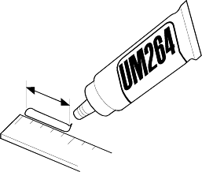
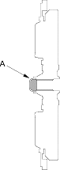
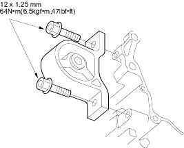
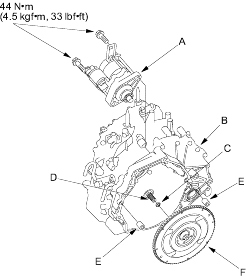

- Remove the used grease in the flywheel hub cap and flywheel splines.
- Push out Super High Temp Urea Grease (P/N 41211-PY5-305) in weight about 2.5 grams (0.086 oz.) using a ruler. Length of 40 mm (1.57 in.) pushed out grease weighs 1 gram (0.035 oz.)

- Fill the inside of the flywheel hub cap (A) with measured Super High Temp Urea Grease. Do not fill over 2.5 grams (0.086 oz.), it may damage the transmission.

- Install the front mount on the flywheel housing.

- Install the starter (A) on the flywheel housing (B).

- Install a new rubber sealing ring (C) on the input shaft (D) and install the 14 mm dowel pins (E) in the flywheel housing.
- Install the flywheel (F) on the input shaft.
- Place the transmission on a jack and raise it to the engine level.